Microsoft Fabric Medallion Architecture: Lessons Learned
A practical account of migrating an older data platform to a Fabric medallion architecture – what we used to work with, why it had to change and how we built it better this time.
Microsoft Fabric changed the way we build data platforms on top of Power BI. Before Fabric, the typical journey was straightforward: connect to a data source, load it into a semantic model, build your reports. Power Query for transformations, DAX for measures, done.
Fabric introduced a new layer between the data and the report, and with it, a completely different set of tools and concepts. Lakehouses. Warehouses. Notebooks. Pipelines. Semantic models that connect to Delta tables instead of imported datasets. Suddenly, building a good Power BI solution wasn't just about DAX and data modelling anymore. It was about understanding where data lives, how it moves and who processes it before it ever reaches a visual.
We encountered this shift on a real project: an older data platform built in Microsoft Fabric, serving internal teams and external clients through Power BI reports. When the project was young, we built what made sense. When the project grew, we started feeling the ceiling. This is the story of what we built, what we outgrew and how we redesigned it without throwing away what was already working.
The decision | What we wanted to achieve
We wanted to connect the semantic model via Direct Lake for live data without scheduled refreshes. We wanted fewer transformation layers, so there was a single place where business logic lived and could be tested. We wanted to support Power BI Embedded properly, which meant tighter control over environments and deployments. And we wanted the platform to scale (more data sources, more reports, more users) without the complexity compounding every time something new was added.
Once those goals were on the table, the architecture almost designed itself. To get Direct Lake, you need Delta tables in OneLake. To get Delta tables that are clean and validated, you need a transformation layer that runs before data reaches the model. To get that transformation layer under control, you need a clear boundary between raw ingestion and processed data. That's the medallion pattern: Bronze for raw, Silver for processed, Gold for the semantic model.
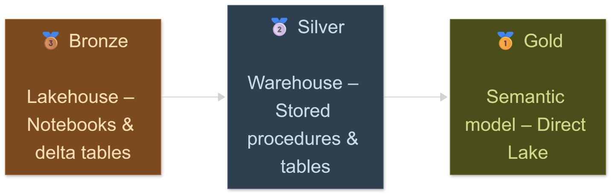
A quick proof of concept confirmed it worked end to end. Then came the real data.
Before | What we had
The old architecture had a clear lineage:
Data sources (APIs, flat files, SharePoint exports) → Notebooks → Processed tables in the Lakehouse → SQL Analytics Endpoint → Semantic model in import mode → Reports
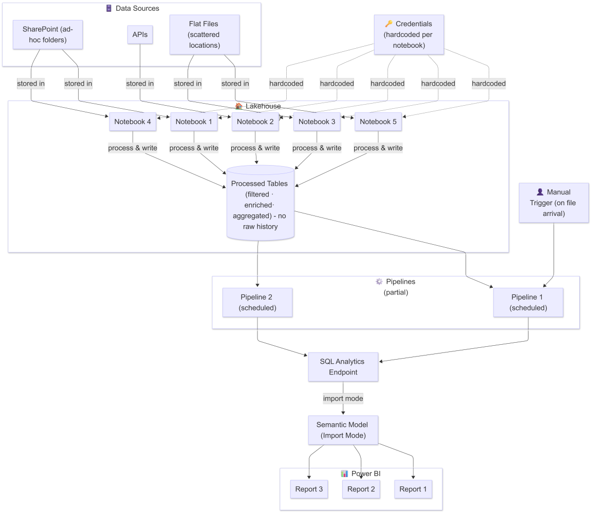
Old architecture diagram
The notebooks handled ingestion and processing together because that was the most practical approach when the project was smaller. The import mode semantic model was the standard approach before Direct Lake became a realistic option. The transformation logic spread across notebooks, Power Query and DAX because each layer was solving a real problem at the moment it was introduced.
It worked. The platform delivered real value for real users over a meaningful period. But our needs changed and grew in ambition. We needed live data, tighter governance and room to scale reporting without the complexity multiplying.
Before
After
Single lakehouse layer, no raw history
Credentials hardcoded per notebook
Mixed trigger strategy (scheduled + manual)
Import mode via SQL Analytics Endpoint
Transformation logic split across notebooks, Power Query and DAX
No data recovery path for some data sources
Bronze / Silver / Gold separation
Centralised credentials via Fabric Environment
Fully scheduled, orchestrated pipelines
Direct Lake connection, no import refresh
All transformation logic in SQL stored procedures
Full raw history in bronze for reprocessing
The new architecture | What we built
The first thing rebuilt was the ingestion layer. New notebooks were written from scratch for all API-based data sources, with a focus on clean separation of concerns: notebooks only fetch and store raw data. Whatever the API returns lands in a delta table with a timestamp recording exactly when it arrived.
Credentials were moved out of individual notebooks entirely and into a Fabric Environment. One centralized location, referenced by all notebooks, never hardcoded anywhere. A small change with a big impact on maintainability and security. The rule for notebooks: use them only where a SQL stored procedure wouldn't be enough. That kept the notebook count small and the responsibilities clear.
Silver: stored procedures and incremental loads
With raw data timestamped in bronze, the silver layer could be built to take full advantage of it. For smaller tables, a full truncate and re-insert on every run was clean and simple. For larger tables or tables expected to grow quickly, an incremental pattern using the bronze timestamp avoids scanning the entire source table on every execution:
-- T-SQL incremental upsert pattern -- DECLARE @last_timestamp DATETIME2 = ( SELECT ISNULL(MAX([timestamp]), '2020-01-01') FROM warehouse_dev.silver.target_table ); MERGE warehouse_dev.silver.target_table AS target USING ( SELECT * FROM lakehouse_dev.bronze.source_table WHERE [timestamp] > @last_timestamp ) AS source ON target.id = source.id WHEN MATCHED AND source.[timestamp] > target.[timestamp] THEN UPDATE SET ... WHEN NOT MATCHED BY TARGET
The pattern is simple: check the latest timestamp already in the silver table, then only bring in bronze rows newer than that. The silver layer stays current without touching data that hasn't changed.
Once tables were populated, validation views were created using OneLake shortcuts to the old production workspace, bringing slices of the legacy tables into the dev environment and comparing them row by row against the newly built silver tables. For the major tables, the results matched. For a few edge cases, the bronze layer made it straightforward to trace back, fix the stored procedure logic and reprocess.
Gold: Direct Lake semantic model
With silver tables clean and validated, the semantic model was rebuilt. The approach was to use a direct lake based semantic model for live data. The key constraint of direct lake mode shapes the entire approach: no calculated columns, no Power Query transformations, no calculated tables. Everything that the model needs must already exist as a column in the silver layer.
All measures were recreated in DAX, tables were related and reports were rebound to the new workspace. Some visuals needed minor adjustments: column names, formatting, a few measures that behaved slightly differently under direct lake. Everything was traced back and fixed. The end result was a semantic model and report set that behaved identically to the old one, built on a foundation that was orders of magnitude cleaner.
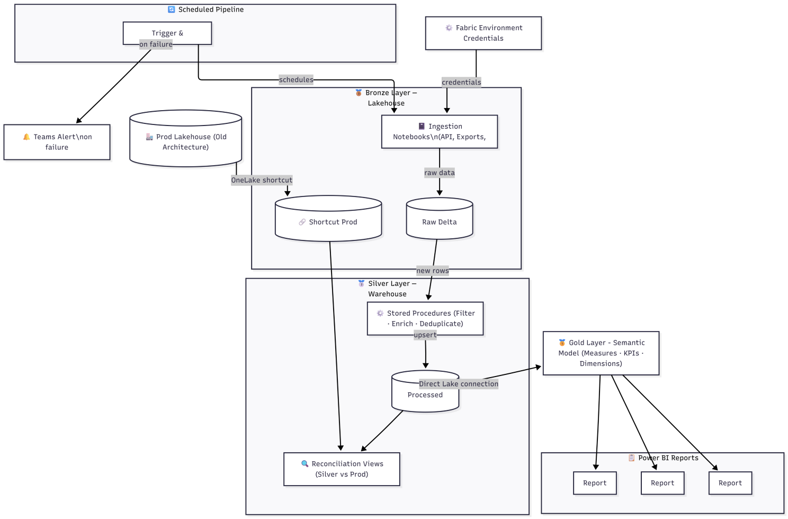
New architecture diagram
Takeaway | Where does the decision belong?
The biggest architectural insight isn't a technical one: it's about where decisions belong. Every transformation that happens inside Power Query, as a DAX calculated column or as a report-level filter is a decision that was deferred past its natural home. The medallion pattern forces those decisions earlier, into SQL, where they can be versioned, tested and reused by anything downstream.
Preserving raw data in bronze costs almost nothing in a cloud lakehouse in comparison with the benefits it gives. The ability to reprocess from scratch (without calling an API again, without finding the original file) is worth far more than the storage it occupies.
And that was just the foundation. A clean architecture doesn't solve governance by itself. Who controls what gets promoted to production, when and under what conditions: that's where the real story continues.
2. Two environments, one source of truth: dev, prod and everything in between
Let's set the scene. You've just finished rebuilding the medallion architecture in your development environment. Bronze is humming, silver stored procedures are running clean, the semantic model is connected via direct lake, reports look exactly as they should. You're happy. You close your laptop.
The next morning a colleague opens a report and mentions something looks off. You investigate. Turns out a notebook was tweaked, a stored procedure was edited, a table schema shifted slightly and none of it was intentional for production. It just... happened. Because there was only one environment.
That's the part nobody tells you when they hand you the "medallion architecture" keyword list. The layers are important. But so is the question of where those layers live and who can touch them.
The problem | Why one environment isn't enough?
In the old architecture, there was one lakehouse. Everyone worked in it. Notebooks were edited live. Maybe - maybe - as a better practice you would save a backup just in case. But if not, then if something broke during a run, it broke for everyone. If you were experimenting with a new ingestion approach or rewriting a transformation, that experiment was happening on the same tables the reports were reading from.This is fine when a project is small. It stops being fine the moment more than one person is touching the codebase or the moment you have a client who expects the dashboard to be correct at 9am on a Monday.
The medallion architecture gave us clean layers. The dev/prod separation gave us a clean boundary around all of them.
Dev workspace
Prod workspace
Where all development and testing happens
Notebooks, stored procedures, schema changes — all here first
Direct Lake semantic model built and validated here
Teams failure alerts on bronze and silver pipelines
Pipelines run on a schedule, but changes are safe to experiment with
Receives only what has been validated in dev
No direct editing — all changes flow through the sync pipeline
Semantic model and reports deployed via deployment notebooks (stay tuned)
Teams failure alerts on all prod pipelines
Sync can be paused manually or flipped automatically via trigger
The rule is simple: nothing goes to production manually. Everything flows through a controlled sync.
The build | The sync pipeline
The core idea behind the sync is straightforward. Dev and prod warehouses share the same schema. When a pipeline run completes successfully in dev, the sync pipeline copies the resulting silver tables from dev into prod table by table, in a controlled sequence.
Under the hood, the sync uses a Lookup activity that builds a dynamic list of tables to sync, followed by a ForEach that iterates through them sequentially. Each iteration runs a Copy activity with a truncate-and-insert strategy: the prod table is cleared, then repopulated from dev. No partial states, no row-level merging between environments, just a clean, deterministic copy.
Why truncate and insert, not merge? Because the silver tables in dev are already in the validated state. There's no reason to be surgical about what goes to prod: if dev is good, prod should look exactly like dev. Truncate and insert makes that guarantee explicit. "But what if dev isn't good?" - that's also covered and we'll get to it.
Each of the caller pipelines: Daily Data, Weekly Data and Manual Data invokes the master sync pipeline after its own run completes. The caller runs its notebooks and stored procedures, verifies success, then hands off to the sync. Each caller pipeline runs independently from the others, ingesting only the tables specific to itself and respecting its own schedule. Failure at any point in a caller pipeline triggers a Teams alert and stops execution before the sync is ever reached.
Why independent caller pipelines? It makes no sense to always pull the entire silver layer data volume from dev to prod. Each pipeline only syncs what it owns, based on its own schedule: Daily data runs multiple times a day, Weekly data once a week, Manual data on demand.
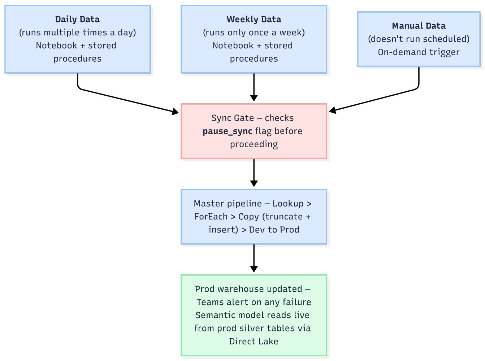
The pause gate
Having a sync pipeline is useful. Having a way to stop it without touching any pipeline configuration is essential.
There's a table in the prod warehouse called sync_control. It has one column that matters: pause_sync, a single bit flag. Before the master sync pipeline runs any copy activity, it checks this flag. If it's set to 1, the sync stops, meaning our trigger detected an anomaly or someone intentionally paused it. Nothing is written to prod, no error reaches the semantic model or report level. Because we also got an alert, we can now check what's wrong at dev level and fix the problem while prod continues working fine.
But what if you simply want to pause the sync because you have planned work to do? Toggling the flag is done through a separate, single-activity pipeline (let’s call it Set Sync State): a Script activity that flips the bit. No UI changes, no pipeline edits, no credentials required beyond the workspace access you already have. One pipeline run to pause, one to resume. 0 means sync is active, 1 means it's paused.
-- T-SQL sync control table -- CREATE TABLE warehouse_prod.silver.sync_control (pause_sync BIT NOT NULL DEFAULT 0);
Why does this matter in practice? You've just discovered an issue in a stored procedure that's producing incorrect output for one table. The dev pipelines are still running on their schedule. Without the pause gate, every run would push that incorrect data straight to prod. With it, you flip the flag, fix the procedure, validate in dev, then resume the sync when you're confident.
The automation
Manually flipping the sync flag is useful. But having it flip itself when something goes wrong is even better.
In the dev workspace, a data quality snapshot table is populated on every pipeline run. A Power BI report built on top of it contains a measure that evaluates whether any key metric has shifted beyond an acceptable threshold between the latest snapshot and the one from the previous run. If the rule breaks, say, the number of orders drops by more than x% overnight, then an Activator alert fires.
Below is a real trigger in action. At 09:54, the sync is running normally: pause_sync = 0. At 09:57, the Activator detects a change in the data quality measure and fires, calling the Sync ON/OFF pipeline with pause_sync = true. By 10:00, the table reflects the new state: pause_sync = 1. Three minutes from breach detection to sync paused, fully automated, no manual intervention required.
The Activator rule runs every 15 minutes, scheduled in between the bronze ingestion notebooks. That gap is deliberate and it gives the Activator time to evaluate the latest data and pause the sync before the next fetch runs. If a breach is detected, the gate closes before new data reaches production.
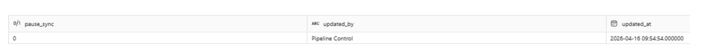
1. Sync is active, data flows from dev to prod
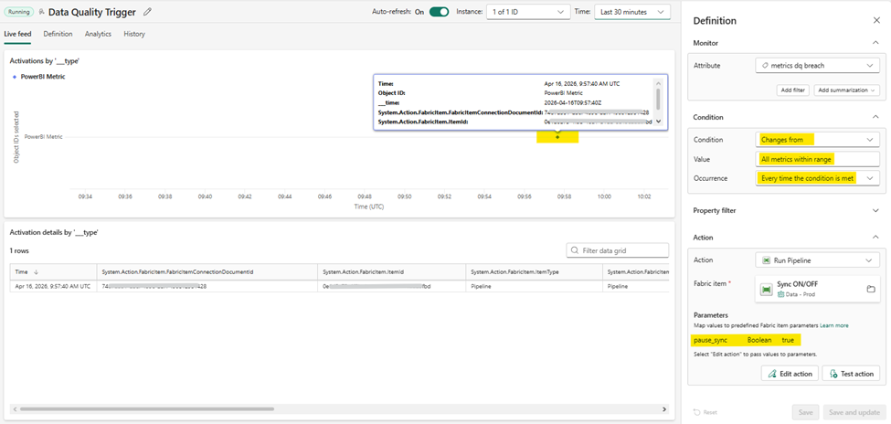
2. The activator fires, the data quality metric value changed, the rule triggered and the Sync ON/OFF pipeline was called with pause_sync = true
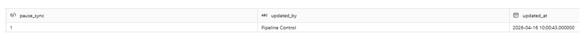
3. Sync state is inactive, pause_sync has been updated
That Activator alert does two things simultaneously: it sends a notification to a Teams channel so the right people are informed immediately and it triggers the Set Sync State pipeline, automatically flipping pause_sync to 1. The sync stops. Prod is protected. The team has time to investigate in dev without any bad data propagating downstream.Here's how the full flow looks end to end: from a dev pipeline run all the way through to prod reports, with the automated gate sitting across the boundary:
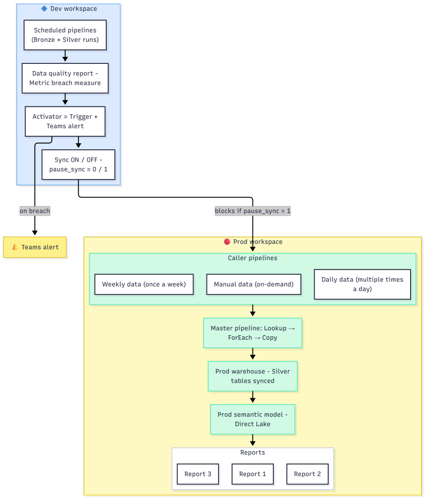
Takeaway | What does the separation actually give you?
Dev/prod separation sounds like obvious engineering best practice. And it is. But in a Microsoft Fabric context, where the boundaries between development and production can get blurry very fast: same capacity, same tenant, easy to just edit something live, it requires deliberate architecture to enforce it.
The sync pipeline makes promotion from dev to prod a conscious, traceable act. The pause gate makes it reversible and controllable without requiring anyone to touch pipeline configuration under pressure. The automated trigger closes the last gap: even if nobody is watching, the gate closes itself when the data says something is wrong.
The sync gate exists precisely because of how Direct Lake works. Every change that reaches the gold layer is immediately visible in all reports, including embedded ones served to clients. There's no refresh buffer, no scheduled window, no lag between a data push and what a client sees on screen. When data updates, reports update.
That's the power of Direct Lake. It's also the risk. A bad data push doesn't sit in a queue waiting for the next scheduled refresh, it reaches your clients in real time. The sync gate is the only thing standing between a processing error and a client-facing report.
The medallion architecture gave the data clean layers. The dev/prod separation gave the team clean control over when those layers go live.
3. What the numbers say: reading Fabric Capacity Metrics before and after
Most people open the Capacity Metrics dashboard when something is on fire. We opened it before and after a full architecture migration and the comparison showed us why the rewrite was worth it.
There's a dashboard in Microsoft Fabric called Capacity Metrics. It lives behind a separate app installation and the first time you open it you'll spend about ten minutes wondering whether the numbers are good or bad. There's no green zone, no red line: just bars and CU seconds and a gentle reminder that you are responsible for your own interpretation. CU stands for Capacity Unit. It's the currency Fabric charges for compute. Every notebook run, every stored procedure execution, every semantic model refresh, every pipeline activity. All of it gets converted into CU seconds and tallied up.
We had both architectures running on the same Fabric capacity during the migration window, which gave us something rare: a direct side-by-side comparison over the same days period. Worth noting upfront: both workloads were active simultaneously, so the numbers aren't perfectly isolated. But the patterns are clear enough to be meaningful.
A quick primer | What is a CU, actually?
Before looking at numbers, it's worth understanding what you're measuring. The dashboard shows CU (s) everywhere and the unit is easy to misread.
CU (s) = Capacity Unit-seconds (think it as compute intensity × duration, combined into one number)
CU is not "seconds" The (s) is the time dimension. A CU measures how much compute resource was consumed; the (s) tracks how long that consumption lasted. Together they give you total computational cost.
Think: kilowatt-hours Just like electricity bills combine wattage × time, CU (s) combines compute intensity × duration. A heavy query that runs briefly can cost the same as a lighter query that runs longer.
What it measures Every notebook run, every stored procedure execution, every semantic model refresh, every pipeline activity - all of it converted into CU seconds and tallied up per workspace, per item, per day.
The dashboard lets you slice this by workspace, by item kind, by day and by individual item. Once you understand what you're looking at, it becomes a very honest mirror of your architecture's efficiency.
The headline | 42% fewer CUs for equivalent work
At workspace level, the old architecture consumed 472,492 CU seconds across its three workspaces over 14 days. The new architecture consumed 272,200 CU seconds across its two. That's a reduction of roughly 42% for a platform that handles the same data sources, produces the same reports and serves the same users.
The image below shows the workspace-level breakdown as it appears in the Capacity Metrics app. The old architecture workspaces: Data (lakehouse, notebooks), Internal (internal semantic models, reports) and External (external semantic models, reports). The new architecture Dev and Prod workspaces aside. Same capacity, same period, same data.
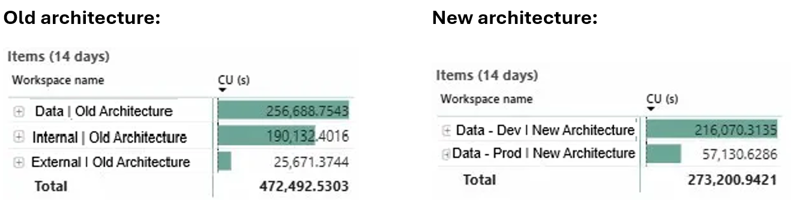
Source: MS Fabric Capacity Metrics
The breakdown | Where the CUs actually went
The aggregate number is satisfying, but the per-item breakdown is where the architectural story becomes visible. Here are the top consumers across both architectures:
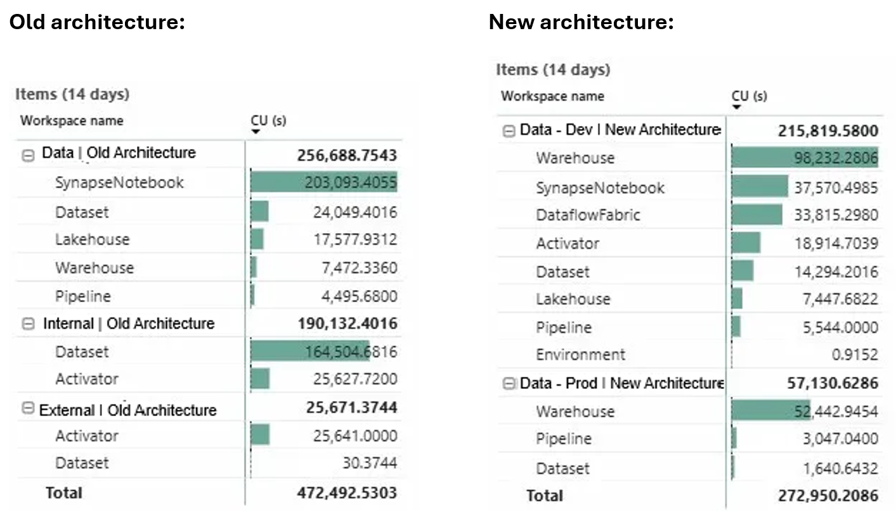
Source: MS Fabric Capacity Metrics
Two numbers jump out immediately:
The notebook problem
In the old architecture, notebooks consumed 203,093 CU seconds - more than 43% of everything the old platform used in two weeks. This was the notebook doing all the work: reading from APIs, filtering, deduplicating, transforming, aggregating and writing back to the lakehouse. Notebooks doing most of the heavy work, paying CU every time they ran. And they ran a lot.
In the new architecture, the notebooks consumption dropped to 37,570 CU seconds. The notebooks now only do what notebooks are genuinely needed for: bronze ingestion from external APIs. Everything else moved to SQL stored procedures in the warehouse. And warehouse compute, it turns out, is considerably cheaper per operation than notebook compute for structured transformation work.
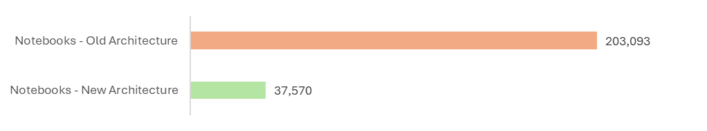
Old vs New Architecture CU (s) consumption
The semantic model problem
The second number is the old architecture's cost: 188,583 CU seconds. This was the import-mode semantic model doing what import-mode semantic models do: running full scheduled refreshes, loading all the data from the SQL Analytics Endpoint into memory, over and over, on a fixed schedule.
In the new architecture, the equivalent dataset items consumed 14,284 CU seconds in dev and 1,640 CU seconds in prod (17,341 total). The reason is Direct Lake: when the semantic model connects directly to the Delta tables in the warehouse, there is no refresh to run. The model reads live data at query time. The massive CU cost of repeated full imports simply disappears. We will talk about Direct Lake connections in the future chapter (*stay tuned*).
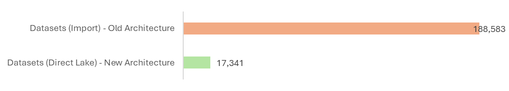
Old vs New Architecture CU (s) consumption
Takeaway | What the metrics measure?
Capacity Metrics won't tell you your architecture is good or bad. It will show you exactly what you're paying for in compute and if you know what you're looking at, that's often enough.
In our case, two line items explained most of the cost difference: notebooks doing transformation work they shouldn't have been doing and a semantic model refreshing data it could have been reading directly. Fix those two things if you can: move transformations to SQL, move the semantic model to Direct Lake. The savings follow naturally.
4. How data reaches Power BI: import mode vs Direct Lake
Different ways to connect a semantic model to its data source. One of them changed everything about how our platform performs and what the model has to carry in memory.
When you build a semantic model in Power BI or Microsoft Fabric, one of the first decisions you make, often without realizing it, is how the model connects to its data. This choice shapes everything downstream: query performance, refresh costs, memory footprint and how fresh the data actually is when a user opens a report.
There are three connection modes. Most people start with one (usually import mode) and never revisit the decision. We did, and the difference was significant enough to dedicate a chapter to it.
Here is how each connection types work:
Import model (Classic)
DirectQuery (Live)
Direct Lake (Fabric-native)
Data is copied into the model's in-memory store on refresh
Queries run against the in-memory copy, fast
Data is only as fresh as the last refresh
Full refresh required to see new data
Model size grows with data volume
High CU cost per refresh cycle
No data stored in the model - queries go straight to the source
Always live, always fresh
Performance depends entirely on source query speed
No refresh cost, but every visual fires a query
DAX → SQL translation overhead on every interaction
Limited DAX and modelling support
Reads directly from Delta Parquet files in OneLake
No data copied, no refresh scheduled
Near-import query speed via column streaming
Data updates as soon as the Delta table updates
Zero model memory footprint
Requires Fabric - not available in classic Power BI
DirectQuery is an obvious answer to import mode's staleness problem, but it trades away query performance and DAX flexibility, which makes it impractical for complex models with many measures and calculated logic. Direct Lake is the Fabric-native answer that avoids that trade-off: near-import speed, without any in-memory copy, without a refresh cycle.
For our use case - a warehouse with well-structured silver tables, complex DAX measures and a need for data that's current within the last pipeline run - Direct Lake was the right call.
A common question | Does a Fabric Warehouse look like Delta to Direct Lake?
Yes! And this is worth understanding properly, because it's not obvious.
A Fabric Warehouse exposes a T-SQL interface, so it feels like a traditional SQL database. But under the hood, every table created in a Fabric Warehouse is physically stored as a Delta Parquet table in OneLake, the same format used by Lakehouse tables. You can browse to it directly via the OneLake file explorer and see the Parquet files and Delta log sitting there.
Direct Lake doesn't connect to the Warehouse as an SQL engine, it connects to the Delta files the Warehouse writes to OneLake. The T-SQL interface and the Direct Lake connection are two different ways of reading the same underlying files. This is why our semantic model can connect via Direct Lake to warehouse tables even though we interact with those tables via stored procedures and T-SQL.
The practical implication: when a stored procedure runs and upserts rows into a warehouse table, it updates the Delta files in OneLake. The semantic model's Direct Lake connection sees those updated files immediately - no refresh required, no intermediate step. The pipeline run is the "refresh."
Semantic Models | Before and after
Here's how the data path looked in the old architecture and how it looks now:
Old architecture - data copied into memory on every scheduled refresh - model = 96.90 MB - 81 tables - 700 columns
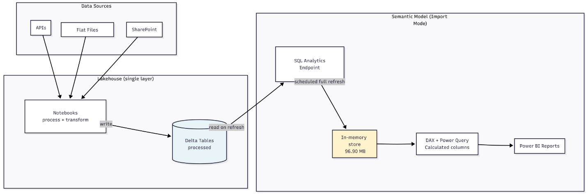
New architecture - no refresh - data live after each pipeline run - model memory = 0 B - 43 tables - 441 columns
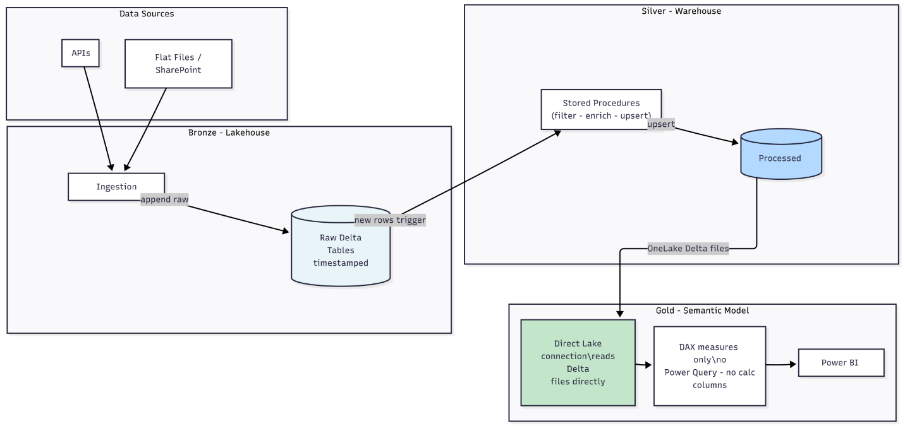
What the Vertipaq Analyzer showed
The Vertipaq (Memory) Analyzer connects to a semantic model and reports exactly what it's holding in memory table by table, column by column. Running it against both models produced the starkest numbers in this entire article.
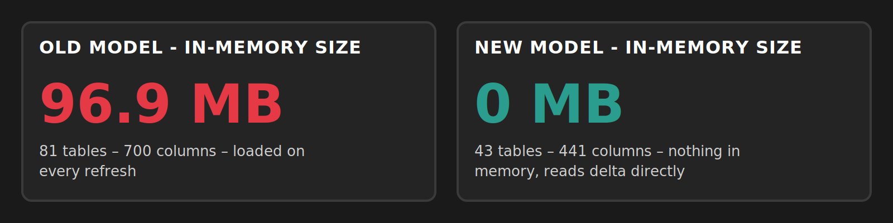
The old model's heaviest tables were the main fact tables, each occupying between 17 MB and 23 MB individually, with two auto-generated LocalDateTable calculated tables consuming another 24 MB between them. Every refresh loaded all of this from the SQL Analytics Endpoint into the model's in-memory store from scratch.
The new model reports 0 B. Not because it has no data (the same tables exist, with the same rows), but because Direct Lake doesn't load anything into the model. It reads column segments from the Delta Parquet files in OneLake on demand, at query time, without ever holding a full in-memory copy.
The model also got smaller structurally during the rewrite. Going from 81 tables and 700 columns to 43 tables and 441 columns reflects the cleanup that happened when the new silver layer was built: intermediate tables that existed only because Power Query needed them, calculated tables that compensated for missing columns in the source and duplicated date tables that the auto-date feature had generated silently over time - all of it removed, because the silver stored procedures now handle that logic before data ever reaches the model.
Final thoughts
Hopefully, this article gave you some ideas for evaluating an existing or a new Fabric architecture you're building.
It's important to assess what you're trying to solve and what your users need before choosing the right methodology for your use case. Medallion architecture is a proven model that worked for us, but you might need a different approach.
We're open to hearing what your current setup looks like or if you don't have one, we can help you plan the best course forward. Talk to us.